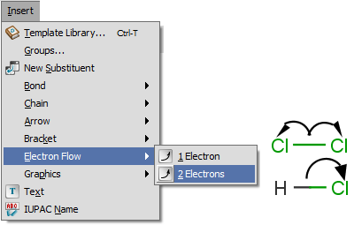

Electron flow arrows
Electron flow arrow shows the actual direction of motion of the electrons. It can point from an
atom or bond to an other atom or bond or even an incipient bond (formed after the electron transition).
How to draw the electron flow arrow
- Select the arrow type (single electron flow or electron pair flow). (Menu: Insert > Electron Flow)
- Move the cursor onto a bond or an atom of the structure on the canvas, right-click on it. (It will be the source of the electron flow.)
- Select the destination: move the mouse to the destination and click on it.

Handling endpoints
Logic of the selection of electron flow arrow endpoints are the following:
If the source is an atom, the destination can be:
- any atom;
- a bond connected to this atom;
- an incipient bond between this atom and any other atom.
If the source is a bond, the destination can be:
- one of the atoms at the end of this bond;
- a bond connected to this bond (has common ending atom);
- an incipient bond between this atom and any other atom.
If one endpoint of the electron flow arrow is in an S-group and the other is not, the arrow
has to connect to the attachment point of S-group.
Displaying electron flow arrows
Although the electron flow arrow can start from any atom or bond, its illustration in MarvinSketch
follows certain rules:
If the source is an atom, the origin of a 1 electron flow arrow is:
- the radical;
- the lone pair if no radical is drawn;
- the atom label if no lone pairs and radicals are drawn.
If the source is an atom, the origin of the 2 electron flow arrow is:
- the lone pair;
- the charge if no lone pairs are drawn;
- the atom label if no lone pairs and charges are drawn.
If the source is a bond, the origin of the electron flow arrow is the midpoint of the bond.
The destination of the electron flow can be:
- the atom label (the destination is an atom);
- the midpoint of a bond (the destination is a bond);
- the midpoint (1 electron), or the 3/4 point (2 electrons) of the distance between the atoms
(the destination is an incipient bond).